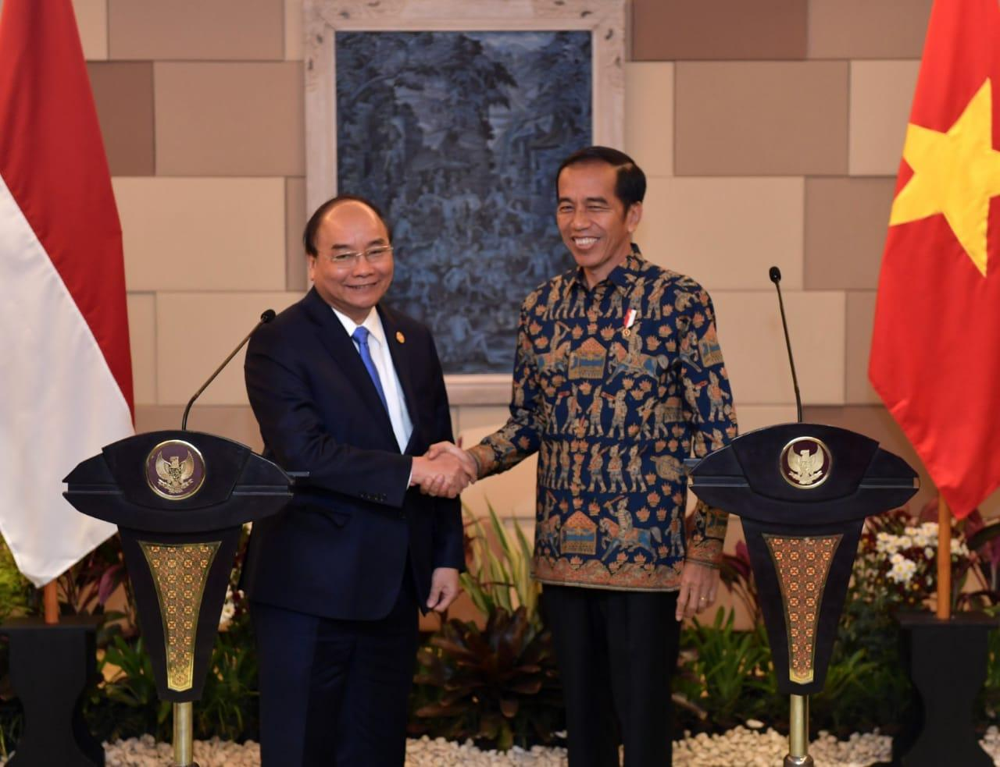
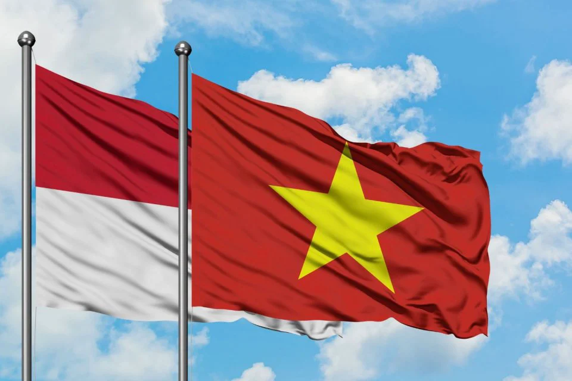
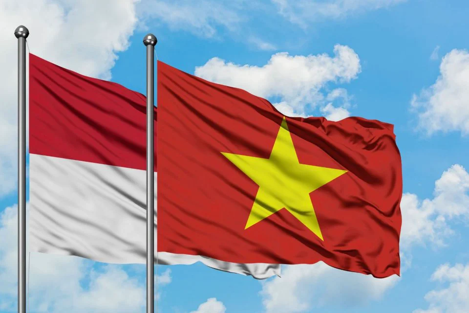

 

Selamat datang di website!👋 Apakah kamu pernah bertanya-tanya bagaimana negara-negara di dunia bekerja sama untuk mengatasi masalah global? 🌏 Melalui website ini, kamu akan menemukan berbagai informasi menarik seputar Kerja Sama Internasional dan bagaimana hal itu berperan penting dalam mencapai Sustainable Development Goals (SDGs), tujuan global yang dirancang untuk menciptakan dunia yang lebih baik.
Website ini akan membahas apa yang membuat kerjasama Internasional berbeda dengan kerja sama pada umumnya, berbagai bentuknya, hingga bagaimana negara-negara saling bahu-membahu untuk menangani tantangan besar.
Tidak berhenti disitu! Kamu juga akan diajak mengenal lebih dekat bagaimana Indonesia memainkan peran penting di skala internasional. Salah satu contohnya adalah hubungan bilateral antara Indonesia dan Vietnam, yang terjalin hampir 70 tahun. berperan aktif dalam melakukan kerjasama internasional dan manfaat yang diperoleh, terkhusus kerjasama bilateral antara Indonesia dan Vietnam.
Tertarik untuk tahu lebih dalam? 🤔 Yuk, telusuri setiap halaman website ini untuk menemukan fakta menarik dan wawasan baru tentang kerja sama antarnegara. Jadikan pengalaman belajar di website ini menyenangkan dan penuh makna! 🌟